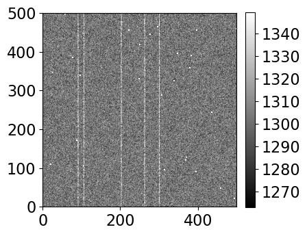

%matplotlib inline
from matplotlib import pyplot as plt
import numpy as np
from ipywidgets import interactive, interact
from convenience_functions import show_image
import image_sim as isim
# Use custom style for larger fonts and figures
plt.style.use('guide.mplstyle')
WARNING: AstropyDeprecationWarning: block_reduce was moved to the astropy.nddata.blocks module. Please update your import statement. [astropy.nddata.utils]
def complete_image(bias_level=1100, read=10.0, gain=1, dark=0.1,
exposure=30, hot_pixels=True, sky_counts=200):
synthetic_image = np.zeros([500, 500])
show_image(synthetic_image +
isim.read_noise(synthetic_image, read) +
isim.bias(synthetic_image, bias_level, realistic=True) +
isim.dark_current(synthetic_image, dark, exposure, hot_pixels=hot_pixels) +
isim.sky_background(synthetic_image, sky_counts),
cmap='gray',
figsize=(4, 4))
i = interactive(complete_image, bias_level=(1000,1200,10), dark=(0.0,1,0.1), sky_counts=(0, 300, 50),
gain=(0.5, 3.0, 0.25), read=(0, 50, 5.0),
exposure=(0, 300, 30))
for kid in i.children:
try:
kid.continuous_update = False
except KeyError:
pass
i
